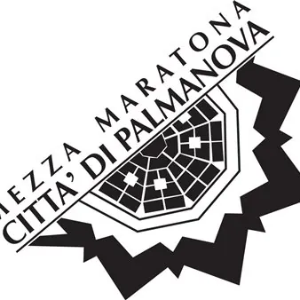

dom 29 nov · dalle 10:00
24^ Mezza Maratona Città di Palmanova
Domenica 29 novembre 2026 si correrà la 24° edizione della Mezza Maratona Città di Palmanova, uno degli eventi più attesi dai runner di tutta Italia. La partenza è prevista da Piazza Grande, centro perfetto della Città di Palmanova, la fortezza a forma di stella a nove punte…
 Indicazioni
Indicazioni
- Costi e prenotazioni
- Costo non indicato · Prenotazione non indicata
- Programma
- Programma da verificare. Apri la fonte ufficiale per orari e possibili aggiornamenti.
- In caso di maltempo
- Nessuna indicazione specifica pubblicata.
- Note
- Acquisito automaticamente dalla fonte.
L’EVENTO
Descrizione completa
Domenica 29 novembre 2026 si correrà la 24° edizione della Mezza Maratona Città di Palmanova, uno degli eventi più attesi dai runner di tutta Italia. La partenza è prevista da Piazza Grande, centro perfetto della Città di Palmanova, la fortezza a forma di stella a nove punte, dichiarata dall’UNESCO, nel 2017, Patrimonio Mondiale dell’Umanità.
Oltre alla gara, sono previsti eventi collaterali, come la Staffetta delle Scuole (il venerdì prima) e una marcia di 5 o 10 km a passo libero non competitiva sui Bastioni di Palmanova (marcia non competitiva che partirà subito dopo la Mezza Maratona).
VENERDÌ 27 NOVEMBRE
Al mattino: “Corsa delle Scuole”, manifestazione ludico-motoria non competitiva aperta ai ragazzi delle scuole Medie e Superiori del Palmarino.
SABATO 28 NOVEMBRE
Dalle ore 14:00 alle ore 19:00, Piazza Grande sarà animata con intrattenimenti ed eventi collaterali.
Dalle ore 14:00 alle ore 19:00, distribuzione pettorali in Piazza Grande a Palmanova.
DOMENICA 29 NOVEMBRE
Dalle ore 7:30 alle ore 9:00, distribuzione pettorali e pacchi gara in Piazza Grande a Palmanova.
Ore 10:00, partenza 24ª Mezza Maratona “Città di Palmanova”.
Ore 10:15, partenza “Corriamo contro la violenza sulle donne” – marcia non competitiva.
Dalle ore 12:00, Pasta Party in Piazza Grande.
Ore 15:00, chiusura manifestazione e arrivederci al 2027.
Maggiori informazioni e iscrizioni sul sito www.mezzamaratonapalmanova.it
IL PROGRAMMA
Programma e orari
Appuntamenti raccolti dalle fonti elencate. Dove manca un orario, non è ancora disponibile in questa scheda.
Programma pubblicato
- Ore 10:00, partenza 24ª Mezza Maratona “Città di Palmanova”.
- Ore 10:15, partenza “Corriamo contro la violenza sulle donne” – marcia non competitiva.
- Ore 15:00, chiusura manifestazione e arrivederci al 2027.
INFORMAZIONI UTILI
Prima di partire
- Controllare la fonte prima di partire.
ORGANIZZAZIONE